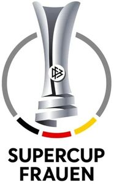

Trade Mark Journal No.2026/010 6 March 2026
WO0000001903055 (9,14,16,18,24,25,26,28,38,41)
Office of origin: Germany
Date of International Registration:1 December 2025
Date of designation in the UK:
1 December 2025

The mark contains the colours black, red, golden yellow, and grey.
International priority date claimed: 1 August 2025
(Germany)
- Class 9
- Apparatus and instruments for accumulating and storing electricity; apparatus and instruments for controlling electricity; scientific research and laboratory apparatus, educational apparatus and simulators; downloadable and recorded content; media content; downloadable software; mobile software; games software; apparatus, instruments and cables for electricity; communications equipment; parts and fittings for communications apparatus; smartphones; smartwatches; data storage devices and media; data processing equipment and accessories (electrical and mechanical); information technology and audio-visual, multimedia and photographic devices; cinematographic cameras; magnets, magnetizers and demagnetizers; measuring, detecting, monitoring and controlling devices; navigation, guidance, tracking, targeting and map making devices; optical devices, enhancers and correctors; spectacles; goggles for sports; sunglasses; spectacle cases; spectacle frames; safety, security, protection and signalling devices; diving equipment; exposed films; encoded, magnetic and smart cards.
- Class 14
- Jewellery; clocks; wristwatches; alarm clocks; time instruments; jewellery boxes and watch boxes; works of art and decorations, including sculptures, made primarily of precious or semi-precious metals or stones, or their imitations, or coated with these; ornamental figurines made of precious metal; coins; badges of precious metal; key rings [split rings with trinket or decorative fob]; decorative pins [jewellery]; lapel pins [jewellery].
- Class 16
- Works of art and decorations, including figurines, made primarily of paper or cardboard, and architects' models; artists' materials and modelling materials; filtering materials of paper; bags and articles for packaging, wrapping and storage, of paper, cardboard or plastics; stationery and educational supplies; writing and stamping implements; correcting and erasing implements; office machines; photo albums and collectors' albums; stickers [stationery]; photographs [printed]; adhesives for stationery or household purposes; printed matter; paper and cardboard; money holders; paper handtowels; paper wipes for cleaning; facial tissues of paper; paper tissues; tissues of paper for removing make-up; towels of paper; toilet paper; paper toilet seat covers; kitchen rolls [paper]; tablecloths of paper; bibs of paper; table napkins of paper; placards of paper; paper coffee filters; tablemats of paper; coasters of cardboard; mats of paper for drinking glasses; refuse bags of paper; table decorations of paper; water filters of paper; paper cocktail parasols; flower-pot covers of paper; paper pennants; bunting of paper; flags of paper.
- Class 18
- Luggage, bags, wallets and other carrying bags; umbrellas and parasols; walking sticks; leather and imitations of leather; fur; animal skins; boxes of leather or leatherboard; cases of leather or leatherboard; boxes made of leather; trimmings of leather for furniture; saddlery, whips and apparel for animals.
- Class 24
- Fabrics; woven fabrics; textile goods, and substitutes for textile goods; coverings for furniture; curtains; labels of textile; wall hangings; linens; kitchen and table linens; bed linen and blankets; bath linen; flags of textile or plastic; bunting of textile or plastic.
- Class 25
- Clothing; sportswear; casualwear; ladies' clothing; footwear; sports shoes; leisure shoes; sandals; bath slippers; headgear; caps being headwear; caps with visors; studs for football boots.
- Class 26
- Clothing accessories, namely brooches, buckles; decorative ribbons of textile; badges for wear, not of precious metal; hair ornaments, hair rollers, hair fastening articles, and false hair; artificial fruit, flowers and vegetables; patches for clothing; ornamental novelty badges [buttons]; embroidered emblems.
- Class 28
- Sporting and physical exercise equipment; gymnastic and sporting articles; hunting and fishing equipment; swimming equipment, namely flippers for swimming, swimming boards, swimming aids, floating airbeds for recreational use and swimming floats; decorations for Christmas trees, party novelties and artificial Christmas trees; fairground and playground apparatus; toys, games, and playthings; video game apparatus.
- Class 38
- Telecommunication services; broadcasting services; telephone and mobile telephone services; communications by computer and providing access to the internet; provision of access to content, websites and portals; provision and rental of telecommunications facilities and equipment.
- Class 41
- Organization of soccer games; entertainment provided via the internet; television programming [scheduling]; programming [scheduling of programs] on a global computer network; entertainment services relating to sport; entertainment services; entertainment services provided by on-line streams; radio entertainment; entertainment services in the form of television programmes; provision of radio and television entertainment services; entertainment in the nature of football games; education, entertainment and sport services; sporting and cultural activities; organization of sports competitions; presentation of live performances; organisation of conferences, exhibitions and competitions; arranging and conducting of conferences, congresses and symposiums; arranging and conducting of seminars; arranging of workshops; conducting workshops [training]; presentation of films; arranging, conducting and organisation of concerts; arranging and conducting of conventions; organisation of training; provision of training courses; arranging and conducting of soccer training programs; soccer instruction; organisation of teaching activities; arranging and conducting of entertainment events; arranging and conducting of lectures; publication of printed matter; publication of printed matter, also in electronic form, except for advertising purposes; electronic publication of texts and printed matter, other than publicity texts, on the internet; providing recreation facilities; box office services.
Deutscher Fußball-Bund (DFB) e.V.
Representative: KLAKA Rechtsanwälte Partnerschaft mbB, Delpstr. 4, 81679 München, GERMANY